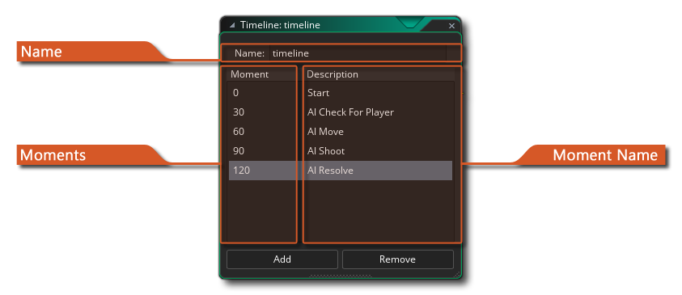

 在大多数游戏中，你会希望某些事情在精确的时刻发生。通常，你可以使用定时事件来完成这件事，但是当你的要完成的事情过于复杂的时候这根本行不通，特别是你只有 12 个定时器可以用。这就是为什么会存在时间轴资源的原因。在时间轴中，你可以指定在游戏时间的某些时刻必须执行的操作，并且你可以使用在其不同事件或代码中也可用于物体的所有动作来定义此操作。当你创建了一个时间轴以后，你可以绑定在一个物体上，然后这个物体的实例就会在你指定的特定时间点上执行这些动作。
例如，假设你想做一个后卫，并且这个后卫应该向左移动 20 步，然后向上移动 10 步，然后向右移动 20 步，然后向下移动 10 步，然后最后停止。要做到这个，你可以通过创建一个时间轴，在起始时间设置向左运动。然后，你将创建时刻 20（“时刻” 只是说 “游戏步” 的另一种方式）并设置向上动作，然后在时刻 30 向右运动，在时刻 50 向下运动，最后在 60 时刻会停止移动。完成后，你就可以把这个时间轴绑定在你的守卫上，然后这个守卫就会完全按照你计划中的那样行动了。你甚至可以在时间轴上设置一个定时器，以便在一段时间后，你的警卫就可以重复巡逻一个区域。你还可以使用时间轴来更全面地控制游戏，例如通过创建一个不可见的控制器物体，然后在某些时刻创建敌人的时间轴，然后将其分配给控制器物体并将实例放入房间。这是使敌人定时生成的简单方法。
要创建时间轴，请右键单击  资源树中的时间轴资源，然后选择 “创建时间轴”。这将打开此页面顶部的窗口，具有以下部分：
资源树中的时间轴资源，然后选择 “创建时间轴”。这将打开此页面顶部的窗口，具有以下部分：
在这里，你可以为时间轴资源命名。 这必须只包含字母、数字或下划线 “_” 字符并且是唯一的，因为它将用于通过代码引用你的时间轴。 此名称也是唯一的时间轴 ID，可用于 DnD™ 操作或代码功能以识别时间轴。
你可以在此处设置时刻值。时刻值为时间轴开始后的游戏步数。因此，如果时间轴的时刻为 0 和 60，则时刻 0 将在时间轴开始时触发，时刻 60 将在 60 步后发生。如果你的房间速度也设置为 60，那么在时间轴开始后一秒钟将发生 60 时刻。你可以双击
时刻值，也可以使用右键
菜单并选择 “更改时刻”（参见下面按钮菜单部分）进行更改。要添加新时刻，只需单击编辑器底部的 添加 按钮。 添加新时刻将打开代码或动作编辑器，你可以在此处添加要在此时调用的函数或 DnD™。
为了帮助你了解你的时间轴正在做什么，允许你给时刻一个名称来识别它们。 这只是一个字符串，不会在游戏代码或其他任何地方使用，因为它纯粹是为了组织和理解你的时间轴。你可以双击
时间轴编辑器允许你使用  +
+  选择第一次单击
选择第一次单击  和第二次单击
和第二次单击  之间的所有时刻，或者你可以使用
之间的所有时刻，或者你可以使用  /
/  +
+  单击单个时刻来单独选择它们。 可以使用其中一个选定元素上的鼠标右键
单击单个时刻来单独选择它们。 可以使用其中一个选定元素上的鼠标右键  菜单编辑时间轴时刻：
菜单编辑时间轴时刻：
此选项允许你向时间轴添加新时刻。 它会在最后一刻之后直接添加，所以如果时间轴中的最后一刻是 120，那么你添加的下一个将是 121。你可以通过双击
这将打开当前时刻进行编辑。
更改所选时刻的值。 这与在编辑器窗口中慢速双击
更改所选时刻的描述性名称。 这与在编辑器窗口中慢速双击
复制所有选定的时刻，并将它们连续添加到当前时间轴的末尾。
如果你从时间轴中选择两个或更多时刻，则可以选择合并它们。 这将在所选择的第一时刻的位置创建单个时刻，同时将所有代码和动作放在一起。
这将从时间轴中删除选定的时刻。
这些选项允许你剪切、复制或粘贴一个或多个时刻。你也可以在此处使用标准键盘快捷键：
/
+ X、
使用此选项，你可以选择时间轴中的所有时刻。然后可以删除、合并、复制（duplicated，重复）、剪切或复制选定的时刻。
时刻会使用你在创建项目时选择的方法（使用代码或使用拖放操作）创建。使用此选项，无论项目类型如何，都可以将其从一个转换为另一个。